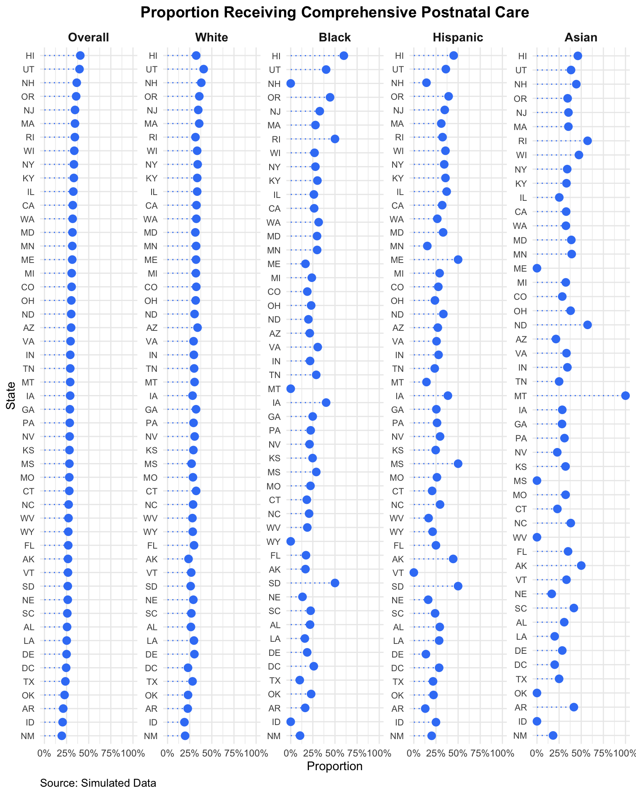

# List of required packages
required_packages <- c(
"readr",
"dplyr",
"ggplot2",
"forcats",
"tidyr",
"kableExtra",
"stringr",
"ggrepel",
"maps",
"usmap",
"sf"
)
# Install missing packages
new_packages <- required_packages[!(required_packages %in% installed.packages()[,"Package"])]
if(length(new_packages)) install.packages(new_packages)
# Load all packages
for (package in required_packages) {
library(package, character.only = TRUE)
}
source(here::here("examples", "colors.R"))Application 3: Dot Plots
Load and Prepare
As usual, we start by loading and preparing the data.
data <- readr::read_csv(here::here("data", "processed", "simulated_data.csv"))
state_data <- readr::read_csv(here::here("data", "processed", "state_data.csv"))
data <- data |>
mutate(
state = as.factor(state),
received_comprehensive_postnatal_care = as.numeric(received_comprehensive_postnatal_care),
insurance = fct_relevel(insurance, "no_insurance"),
race_ethnicity = fct_relevel(race_ethnicity, "white"),
edu = fct_relevel(edu, "hs"),
job_type = fct_relevel(job_type, "unemployed"),
)
data$self_report_income <- factor(data$self_report_income, levels = c(
"$0–$24,999",
"$25,000–$49,999",
"$50,000–$74,999",
"$75,000–$99,999",
"$100,000–$124,999",
"$125,000–$149,999",
"$150,000–$174,999",
"$175,000+"
))
# Set "$50,000–$75,000" as the reference category
data$self_report_income <- fct_relevel(data$self_report_income, "$50,000–$75,000")Warning: 1 unknown level in `f`: $50,000–$75,000race_ethnicity_labels <- c("American Indian or Alaska Native" = "aian",
"White" = "white",
"Black" = "black",
"Asian" = "asian",
"Hispanic" = "hispanic",
"Native Hawaiian or Pacific Islander" = "nhpi",
"Other" = "other")
data |> head() |> kable()| id | provider_id | state | received_comprehensive_postnatal_care | self_report_income | age | edu | race_ethnicity | insurance | job_type | dependents | distance_to_provider | obesity | multiple_gestation | diabetes | heart_disease | placenta_previa | hypertension | gest_hypertension | preeclampsia |
|---|---|---|---|---|---|---|---|---|---|---|---|---|---|---|---|---|---|---|---|
| 1 | 1 | AK | 0 | $25,000–$49,999 | 40 | hs | white | no_insurance | unskilled | 3 | 18.856908 | 0 | 0 | 0 | 0 | 0 | 0 | 0 | 0 |
| 2 | 1 | AK | 1 | $75,000–$99,999 | 21 | some_college | white | no_insurance | professional | 2 | 4.096578 | 0 | 0 | 0 | 0 | 0 | 0 | 0 | 0 |
| 3 | 1 | AK | 0 | $50,000–$74,999 | 29 | hs | hispanic | no_insurance | trade | 2 | 2.841914 | 0 | 0 | 0 | 0 | 0 | 0 | 0 | 0 |
| 4 | 1 | AK | 0 | $25,000–$49,999 | 31 | hs | white | no_insurance | unskilled | 4 | 6.459543 | 1 | 0 | 0 | 0 | 0 | 1 | 0 | 0 |
| 5 | 1 | AK | 0 | $75,000–$99,999 | 27 | hs | white | no_insurance | unskilled | 3 | 10.126509 | 0 | 0 | 0 | 0 | 0 | 0 | 0 | 0 |
| 6 | 1 | AK | 0 | $50,000–$74,999 | 17 | less_than_hs | white | no_insurance | unemployed | 3 | 5.235320 | 1 | 0 | 0 | 0 | 0 | 0 | 0 | 0 |
Dot Plots
In applications_2_choropleth.qmd we drew up a choropleth map of the receipt of comprehensive postnatal care by state. Let’s see if a dot plot can help us understand the data better.
# Calculate overall proportions for all states
overall_care_data <- data |>
group_by(state) |>
summarize(
proportion = mean(received_comprehensive_postnatal_care, na.rm = TRUE),
n = n(),
.groups = "drop"
) |>
mutate(race_ethnicity = "Overall")
# Calculate proportions for each race
race_care_data <- data |>
filter(race_ethnicity %in% c("white", "black", "hispanic", "asian")) |>
group_by(state, race_ethnicity) |>
summarize(
proportion = mean(received_comprehensive_postnatal_care, na.rm = TRUE),
n = n(),
.groups = "drop"
) |>
mutate(
race_ethnicity = fct_recode(race_ethnicity, !!!race_ethnicity_labels)
) ## will have warning because we dropped some race/eth cats
# Combine overall and race-specific data
dot_plot_data <- bind_rows(overall_care_data, race_care_data)
# Sort states by overall proportion (to ensure consistent order across facets)
state_order <- dot_plot_data |>
filter(race_ethnicity == "Overall") |>
arrange(proportion) |>
pull(state)
dot_plot_data <- dot_plot_data |>
mutate(state = factor(state, levels = state_order)) |>
mutate(
race_ethnicity = factor(
race_ethnicity,
levels = c("Overall", "White", "Black", "Hispanic", "Asian")
)
)
ggplot(dot_plot_data, aes(x = proportion, y = state)) +
geom_point(size = 3, color = colors$blue$`500`) +
geom_segment(
aes(x = 0, xend = proportion, y = state, yend = state),
color = colors$blue$`500`,
linetype = "dotted"
) +
facet_wrap(~race_ethnicity, ncol = 5, scales = "free_y") +
scale_x_continuous(labels = scales::percent_format(accuracy = 1)) +
labs(
title = "Proportion Receiving Comprehensive Postnatal Care",
x = "Proportion",
y = "State",
caption = "Source: Simulated Data"
) +
theme_minimal() +
theme(
axis.text.y = element_text(size = 8),
strip.text = element_text(size = 11, face = "bold"),
plot.title = element_text(hjust = 0.5, size = 14, face = "bold"),
plot.caption = element_text(size = 10, hjust = 0)
)
We find that, in fact, the dot plot is superior to the choropleth map to visualize the spatial trends that exist in the data.
I would encourage you to always try to visualize spatial data using non-map-based visualizations. In many cases, maps foreground non-causal phenomena like population density.
For comparison, compare the above to the choropleth map we made in applications_2_choropleth.qmd, which we reproduce below: